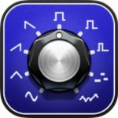
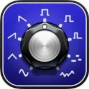

As regulars here will be well aware, I’ve recently taken the decision to cut back on my posting here on the Music App Blog in order to focus my time on some music production work that’s come my way. However, I did suggest I might post occasionally when something caught my attention…..
As regulars here will be well aware, I’ve recently taken the decision to cut back on my posting here on the Music App Blog in order to focus my time on some music production work that’s come my way. However, I did suggest I might post occasionally when something caught my attention…..
Well, something has…. the arrival of the new – and highly anticipated – synth app from Yonac; Kauldron. I’ve reviewed a number of Yonac’s iOS music apps here on the Music App Blog over the years including ToneStack and Steel Guitar, both of which I really like. However, Yonac also do keyboard-based iOS music apps and their previous release – KASPAR – was also a synth…. and a pretty good one at that.
Kauldron – Yonac’s latest iOS synth app looks and sounds very good.
Anyway, Kauldron makes it’s long-awaited App Store debut today. I’ve only had the briefest of plays so far but there are some cool sounds to be had. At its heart, this is a, from a structural perspective at least, a fairly conventional virtual analog synth. You get three oscillators, a noise source, a very nice filter selection, amplitude envelope, some cool modulation options with twin LFOs and an envelope generator, a very interesting arpeggiator, modulation, delay and reverb effects and some cool XY pads for real-time sound shaping, all spread across a number of screens that can be tabbed through via the buttons at the top of the display. The virtual keyboard is well-featured and you also get the option to switch to a ribbon controller mode if you prefer. Yonac also have a comprehensive user manual PDF available from their website and linked to from within the app.
The app ships with a huge collection of presets.
The app ships with a great collection of presets with some great basses and I really like the arp presets… but there are really solid sounds wherever you tip your toe into the preset collection. And the sound is punchy and has plenty of sonic depth; the synth engine is most certainly very capable.
The arpeggiator is very cool and you also get a basic selection of FX.
However, one of the most interesting features means you can very easily generate your own presets at the touch of a button. Well, actually, you get a whole screen of buttons as part of the Spawn 2 technology built into the app. OK, so this is a sort of random present generation system and lots of iOS music apps offer this kind of feature.
The modulation options can help keep your sounds moving :-)
However, with Spawn 2, Yonac have really taken this process to another level and you get considerably control over just how ‘random’ the changes are when you trigger Spawn to do its thing. I’ll only tinkered with this so far but it really does look very clever and, while it won’t stop you generating some totally random (and mainly unusable) sounds if you wish to, it also gives you the ability just to gently nudge a parameter to two with each iteration of the process. As a means of getting subtle variations on a starting point sound, this is very effective.
Spawn some new sounds anyone? The new Spawn 2 engine makes that a much more controllable process.
If that’s not enough, the app is universal, you also get a good MIDI spec including MIDI Learn, IAA, Audiobus 3 and Ableton Link support and – yay! – the app can also work as an AU plugin. I’ve given this a quick try within Cubasis and it seems to work well with the AU UI being pretty easy to navigate even within the restrictions of the smaller AU windows. Oh, and if your DAW/sequencer happens to support the new full-screen AU format, then Kauldron is already good to go…. one of the first AU apps to officially offer support for this new feature of the AU spec.
The ap ships with a comprehensive technical specification including AU support…. as shown here within Cubasis.
The other obvious headline news is that the app is launched at an absolute no-brainer price point. You can, therefore, currently pick up a copy of the app for just UK£3.99/US$3.99. I suspect this is a ‘launch time only price’ so I would get in there quickly if Kauldron takes your fancy…. This is undoubtedly a heck of a good price for what looks like a pretty impressive synth. Kauldron is a 38MB download, requires iOS 10.3 or later and should run well on an iPad Air 1 or iPhone 6 later. Check out the demo video below and then hit the App Store download button to find out more :-)
Kauldron


{kind=link}
{kind=link}
{kind=link}
{kind=link}
{kind=link}
{kind=link}
{kind=link}
Thank you John for this great post. I know that John now won’t have much time to devote to this blog because John have other priorities in relation to music production. But if John post the best musical apps that will appear even once a month we followers of this blog would be very grateful. Thank you John :)
Hi Luis…. that’s kind of what I’m hoping to do….. but thanks for the very kind words as they are always appreciated :-) Very best wishes, John
I just want to say: thank you…
for another very helpful and good written review of a new interesting ios app.
I agree with Luis Silva: if it would be possible for you, maybe once a month, to write
more of your profound reviews, then would this blog retain a longer continuity for what it is:
the best source of information about musical ios apps for all of us.
My best wishes for your musical work
Daniel
This just doesn’t sound that great to me, and I already have at least 5 other virtual analog apps that sound amazing. I just don’t see the point in spending more money on another 2nd-tier synth just because of it’s whiz-bang AI patch generator. Maybe more videos will come out that show it’s sound better.
Unfortunately I agree. I don’t like the sound. Has a brassy timbre which I hate.
FULL SCREEN AU ?
Did I miss something ?
Hi Michael…. Apple have, without making a real fuss about it (which I guess says something about where music making might be amongst their user base and, therefore, advertising priorities), made some interesting tweaks to the AU spec in iOS11. I think the recent Garageband update included support for the new ‘full screen’ format (although I’ve not dug into this as yet)…. while Bram Bos’ new Odessa release – alongside AUM – now makes use of the new ‘MIDI out from AU’ feature…. Both of these technical changes are, I think, significant…. but it will take some time for both AU hosts and AU plugins to adopt/adapt to them I guess…. The full screen mode could, potentially, make it much easier for developers to port any complex non-AU apps over to the AU format…. Fingers crossed…. best wishes, John
I almost knew John would sniff this one out…
so I logged on to Musicappblog, and I was right :)
Kauldron was an instant buy at 60% off introduction price.
Thanks for another interesting review.
This may be the best synth bargain since I bought Animoog for $4.99 in 2014. It sounds fantastic!
Claude, I was even luckier, I got Animoog for .99 Cents when it first released, good times! This app too is for an appaholic like me, a no brainer at this price point. The Spawn 2 button is really fun. John, glad to see you pop back in every so often. I have missed your iOS daily blog but I do understand that there are other fish for you to also fry. So very happy to see you do the occasional major iOS review, it makes my cold turkey withdrawal so much easier on my former daily iOS music blog good habit. Great to see you back even if for a little while. Your written reviews are unmatched in our little iOS music world. My best wishes in all of your future music making projects. Cheers, Susan
Yep, I’m with the other posters here. I kept checking the blog every couple days, even knowing it’s supposed to be dormant. It was a kick to see substantive new posts, and that one of them announces a new synth from Yonac – one of the great iOS developers – was even better. So thank you sir!
I was able to get a new synth fix with confidence it would be worth the download – even if I finally had to upgrade from iOS9 to 11 to get it. (I’d been avoiding it for fear of losing some of my beloved older apps, but so far so good.)
Kauldron may not be a world-beater, but it’s solid, it has a few interesting twists, and among those 900 patches are sure be some to inspire something new. I owe Yonac more than I’ve paid for killer apps like ToneStack, Magellan, Galileo, and KASPAR. I’m never not going to support that level of sustained brilliance.
Count me in the chorus, John – a couple posts a month (howbout one a week!), especially when there’s new stuff, and life would be so much more complete. The other sites really are dismal, even for very basic information. Deserts. I gave up after trying a few. No one has your touch.
And you know – you can’t keep your head buried in the production process ALL the time. I bet a break now and then to do something verbal and less tedious will be just what it takes to keep you fresh in both realms of expression. Balance!
Hi Tim…. thanks for the kind words….. Someone mentioned the ‘pop up blog’ concept in an email last week…. and I kind of like that idea. Anyway, that’s kind of what I hope I’ll be able to do…. just ‘pop up’ when something catches my attention… and maybe a few folks will still be around who want to read it :-) Anyway, thanks again and very best wishes, John
Welldone yonac at least you made it compatible with ipad4 unlike some who developers have been blackmailed with planed obsolescence